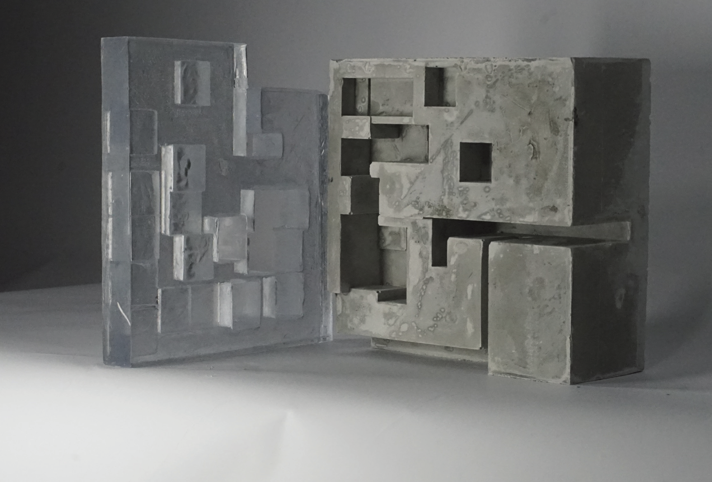
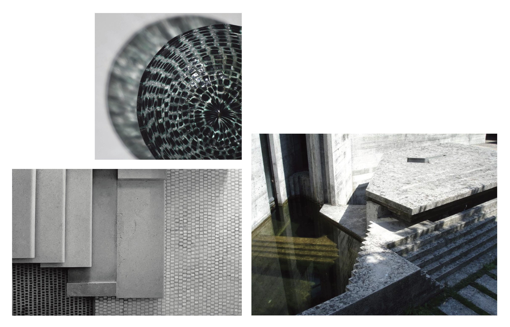
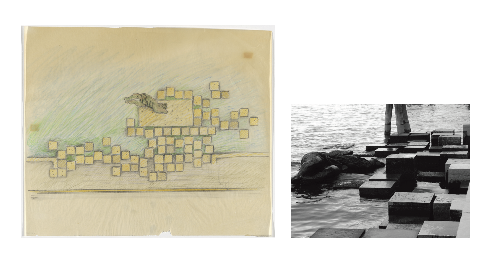
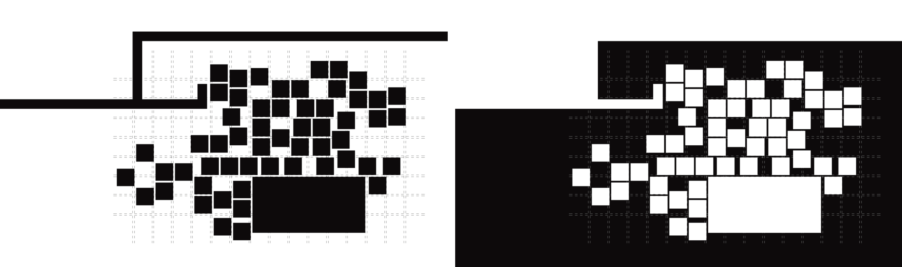
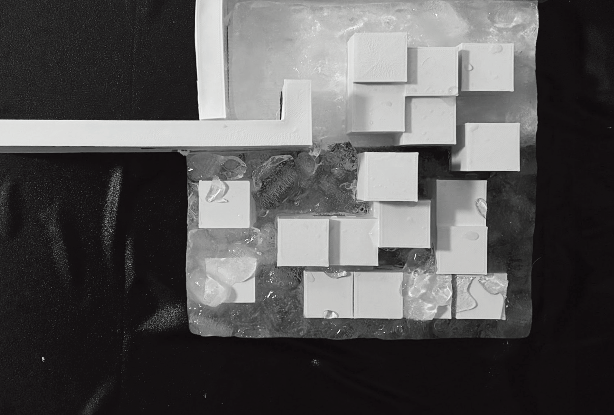
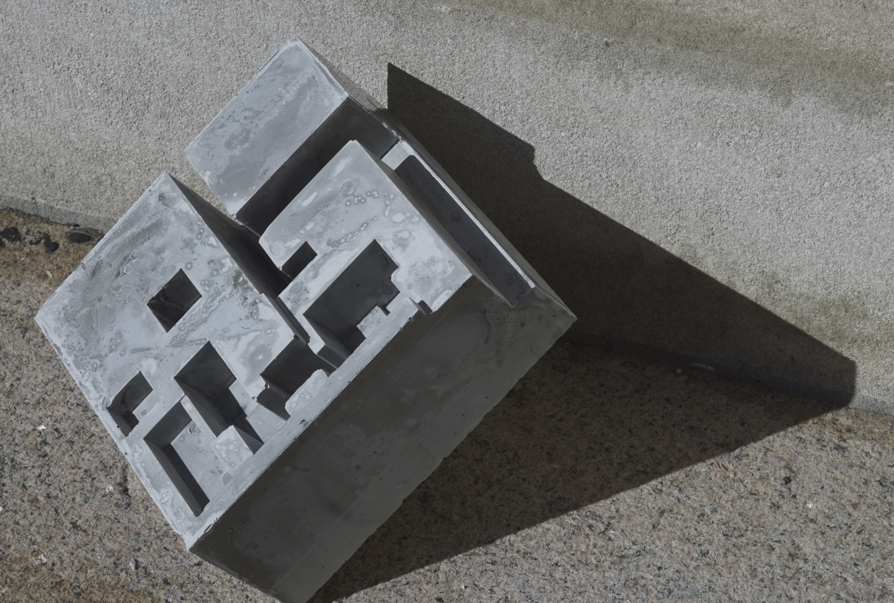
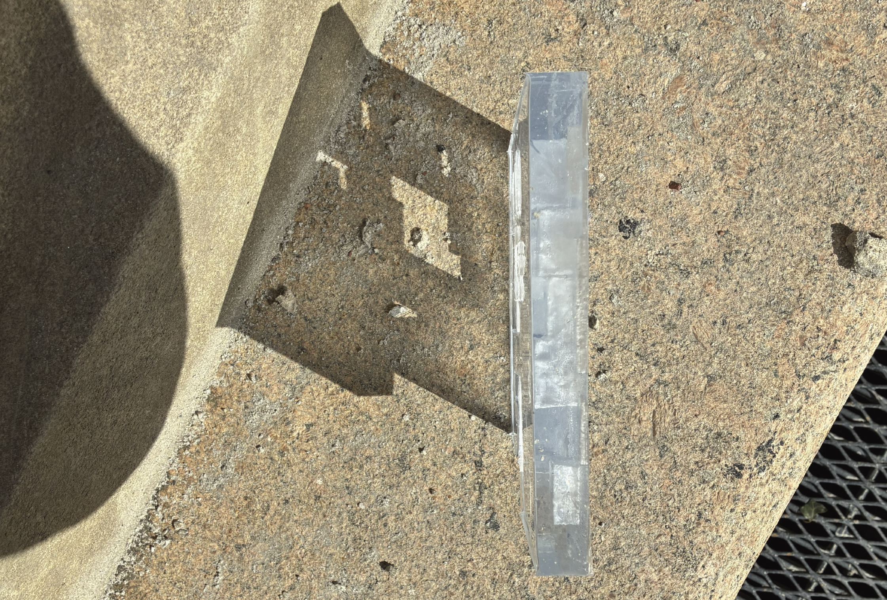
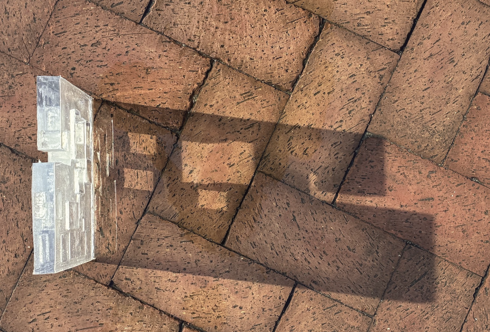
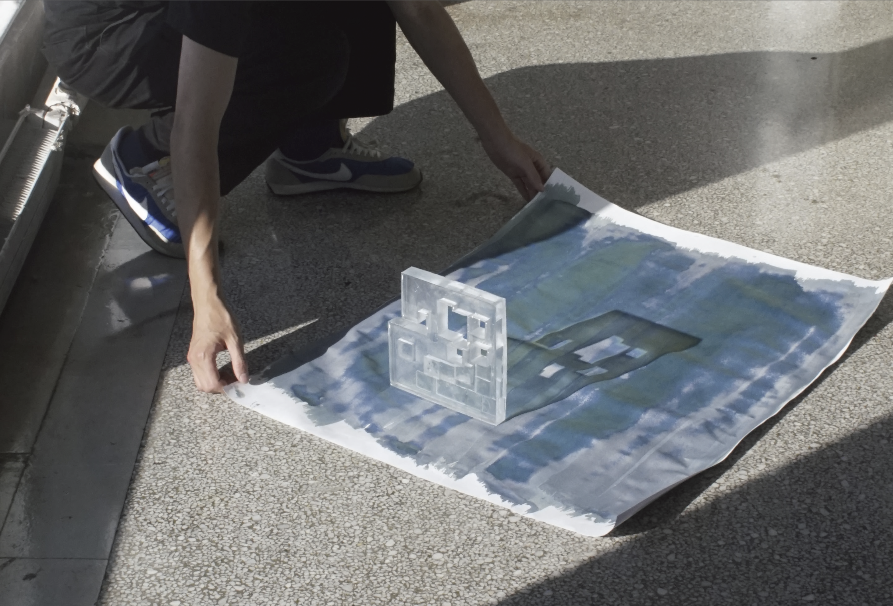
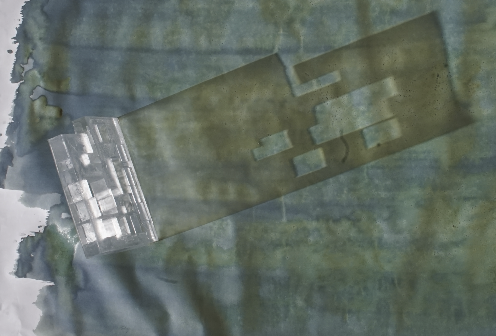

Volumes of Light and Mass

Material Dialogue: Sedimentation and Penetration
Sculpturing Water examines Carlo Scarpa’s treatment of water as an active tectonic presence. By studying the Monument to the Partisan Woman, the project investigates how shifting tides and staggered double-line systems create a perpetual state of flux in space and light. To register this dynamic relationship, the fluid medium is treated as a sculptural volume and translated into distinct physical states—ice, concrete, and resin. Here, the weight of the concrete and the clarity of the resin intertwine to form a dialectic of void and solid.

Vessels of Order and Flux
Carlo Scarpa’s geometry functions as a vessel capturing dynamic rhythm, moving far beyond rigid grids. The staggered textures and colors of the glass hint at the refraction of ripples. This intricate design breeds a continuous, fluid movement within a highly rational order.

Scales of the Tide: The Monument to the Partisan Woman
The Monument to the Partisan Woman breaks the stiffness of a single central axis by utilizing a double-line system to carve out staggered geometric gaps. When the lagoon's tide surges in, water emerges as a proactive force participating in the definition of space and light. The architecture acts as a living instrument measuring the shifting scales of the tide.

Inverting Figure and Ground: Sculpturing Water
The transformation begins with a perceptual shift swapping the solid mass of the monument with the void of the water. The fluid medium becomes a tangible volume to be sculpted by the physical weight of the architecture. Squeezed and formed by these boundaries, we begin to observe the very shape of absence.

Practice I: Traces of the Ephemeral
Ice serves as a transient medium, recording the dynamic disappearance of water as it flows away. The boundaries blur as the solid melts, serving as a phenomenological record of vanishing. This process captures the fleeting traces suspended between presence and absence.

Practice II: Gazing at Gravity
Casting the fluid body into rigid concrete endows the flowing element with unprecedented gravity. This operation asserts absolute mass, transforming formless water into an eternal solid sculpture. The dramatic contrasts of light and shadow emphasize the pure volume of this heavy entity.


Practice III: Sealing Light and Depth
The translucent resin freezes the fluctuating tides, capturing the shifting water levels into distinct physical thicknesses. Placed upon a paved ground, the cast reflects the delicate boundary between the fluid body and the monument's solid mass. When light penetrates this crystalline volume, it reveals the intricate layers of shadow and internal depth beneath the surface.


The Alchemy of Transformation: An Eternal Imprint
Sunlight penetrates the translucent sculpture, translating its internal volume and shifting shadows into chemical reactions on sensitized paper. The cyanotype wash yields the physical residue of this process, capturing a behavioral trace left by light filtering through a sculpted body of water. Those varying gradients of blue permanently seal the exact moment light measured the water's depth.